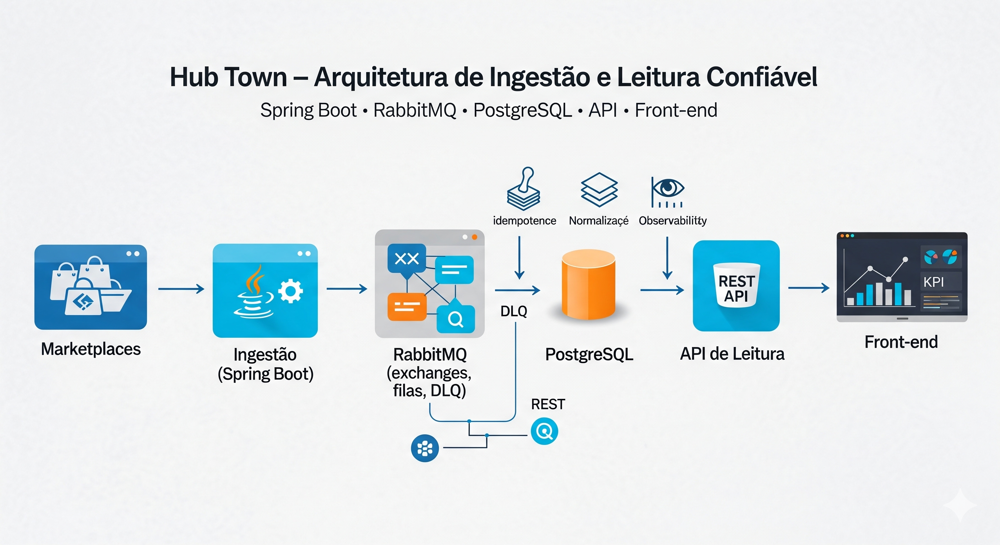

Hub Town: de uma segunda-feira caótica a uma arquitetura confiável

Figura — Arquitetura de ingestão (Spring Boot) + mensageria (RabbitMQ) + persistência (PostgreSQL) + leitura/Frontend.
Quando o comércio local começa a vender em múltiplos marketplaces, a segunda-feira não perdoa: números que não batem, relatórios que chegam tarde, decisões que dependem de dados que mudam a cada F5. O Hub Town nasceu para transformar esse cenário em rotina previsível: ingestão resiliente, leitura consistente, KPIs confiáveis.
Este artigo é um relato de descoberta: qual é o menor conjunto de decisões técnicas que nos dá escala, confiabilidade e clareza? E como aplicá-las, passo a passo, sem sacrificar o que já funciona no frontend?
A ideia que mudou o jogo
Separar o que é caótico do que precisa ser previsível.
- Caótico: integrações com marketplaces (picos, falhas, formatos diferentes). Onde aceitamos variabilidade e erramos para frente com retry, DLQ e circuit breakers.
- Previsível: leitura para o frontend. Onde contratos são estáveis, consultas são rápidas e o dado é único e normalizado.
Daí emergiu nossa arquitetura em cinco blocos:
- Ingestão (Spring Boot) para falar com cada marketplace, agendar polling e receber webhooks, normalizando tudo para um formato canônico.
- Mensageria (RabbitMQ) para desacoplar ritmos: a ingestão publica eventos; consumidores processam no seu tempo, com retries e DLQ.
- Persistência (PostgreSQL) como fonte única de verdade, com idempotência por chave natural e histórico de status.
- API de Leitura que consulta exclusivamente o banco, oferecendo paginação, busca unificada e estatísticas.
- Frontend (React/Vite) que só conversa com a API interna, nunca com os marketplaces.
A jornada de um pedido (do clique ao KPI)
- O marketplace dispara um webhook (ou a ingestão busca via polling). O serviço Spring Boot valida, traduz e normaliza.
- Uma mensagem canônica é publicada no RabbitMQ. Se algo falha, entra em retry; se persistir, vai para a DLQ e fica visível.
- Um consumer Spring Boot lê a mensagem, aplica idempotência (marketplace + original_order_id) e faz UPSERT no PostgreSQL.
- A API de Leitura consulta o banco com filtros e paginação padronizados. Nada de surpresas; só dados consistentes.
- O frontend exibe abas por marketplace, busca unificada e KPIs — sempre com o mesmo contrato de resposta.
Mapa mental (versão textual, hierárquica)
- Hub Town
- Objetivo
- Leitura previsível e confiável para o frontend a partir de dados normalizados.
- Ingestão (Spring Boot)
- Responsabilidades: adapters por marketplace, polling/webhooks, normalização.
- Decisões: schema canônico, publisher confirms, resiliência (retry/backoff, circuit breaker, timeouts).
- Qualidade: idempotência no produtor quando aplicável; métricas de taxa de ingestão e latência.
- Mensageria (RabbitMQ)
- Exchange: topic hubtown.orders.exchange.
- Filas: *.process por marketplace; *.dlq por marketplace; filas de retry com TTL+DLX.
- QoS: ack manual, prefetch 10–20, concorrência 2–4 por fila; observabilidade de backlog e x-death.
- Persistência (PostgreSQL)
- Modelo: orders, buyers, addresses, order_status_history, marketplaces.
- Regras: idempotência por (marketplace + original_order_id); “última versão vence” por occurred_at/versão.
- Performance: índices para busca/paginação; UPSERT consistente.
- API de Leitura
- Rotas: listagem por marketplace, busca unificada, estatísticas.
- Contratos: paginação (data, total, currentPage, totalPages) e filtros estáveis.
- Objetivo: respostas rápidas e previsíveis, sempre a partir do DB.
- Frontend (React/Vite)
- Consumo: apenas a API interna; base URL por variável de ambiente.
- UX: abas por marketplace, visão “Todos”, KPIs.
- Segurança e Configuração
- Segredos fora do código; CORS/headers; auditoria quando aplicável.
- Observabilidade
- Logs estruturados com traceId/correlationId; métricas e dashboards por domínio.
- Operação
- Backups do DB, retenção de mensagens, DLQ visível, reprocessamento controlado e playbooks.
Decisões que protegem a experiência
- Idempotência por chave natural (marketplace + original_order_id): repetiu, não duplica.
- Normalização de status, buyer e address: um vocabulário comum, relatórios coerentes.
- DLQ e retry com política clara: erros ficam visíveis e reprocessáveis, não invisíveis.
- Observabilidade por domínio: do webhook à query, tudo rastreável.
- Contratos de leitura estáveis: paginação e metadados previsíveis para o frontend.
Como vamos construir (fases curtinhas)
- Fase 1 — API de leitura do DB: já entrega valor. Listagem por marketplace, busca unificada, estatísticas e contratos estáveis.
- Fase 2 — Ingestão e fila: primeiro marketplace (ex.: Shopee) com polling/webhook, publicação no RabbitMQ e consumer idempotente persistindo no PostgreSQL.
- Fase 3 — Escala e visibilidade: novos marketplaces (Mercado Livre, Shein), métricas por fila, DLQ e reprocessamento guiado.
- Fase 4 — Operação com confiança: segurança, gestão de segredos, backups, retenção e testes de carga.
Riscos que já esperamos (e como domar)
- Payloads diferentes por marketplace → normalização canônica.
- Rate limits e intermitência → retry/backoff e circuit breakers.
- Duplicidades → idempotência com chaves naturais.
- Filas crescendo → DLQ, monitoramento e reprocessamento controlado.
Próximos passos práticos
- Congelar os contratos da API de leitura e alinhar o frontend.
- Subir um marketplace ponta a ponta (ingestão → MQ → consumer → DB → leitura).
- Habilitar métricas e dashboards mínimos (filas, DLQ, latências de consulta).
Se quiser mergulhar nos detalhes, os documentos de apoio trazem a vista completa sem código: doc/ARQUITETURA.md (topologia e sequências) e doc/DESENVOLVIMENTO.md (diretrizes de time). A história acima é o fio condutor: manter a leitura previsível, domesticar a ingestão e deixar a cidade vender em paz.
Recursos e referências
- Repositório (código-fonte): https://github.com/chmulato/hub_town
- Artigo 1 (contexto e visão inicial): 2025_09_28_hub_local_de_integracao_para_pequenas_cidades.html
Adendo — Dicionário técnico (para executivos)
- Spring Boot: plataforma Java para criar serviços rapidamente, com padrões de mercado já configurados.
- RabbitMQ: serviço de filas que desacopla partes do sistema e absorve picos de tráfego.
- Exchange (topic): componente que recebe mensagens e as distribui para filas conforme “rótulos” (routing keys).
- Routing key: rótulo da mensagem (ex.: orders.shopee.created) usado para decidir o destino.
- Fila (Queue): onde mensagens aguardam para serem processadas por consumidores.
- DLQ (Dead-Letter Queue): fila onde caem mensagens que falharam várias vezes; torna o erro visível e auditável.
- TTL + DLX (Retries): estratégia de “esperar e tentar de novo” usando tempo de vida (TTL) e redirecionamento automático (DLX).
- Idempotência: regra para não gravar duplicado quando a mesma informação chega mais de uma vez.
- UPSERT: operação que insere o registro se ele não existe, ou atualiza se já existe.
- Fonte única da verdade: banco central (PostgreSQL) do qual a leitura é sempre feita, garantindo consistência.
- API de Leitura: serviço que faz consultas ao banco e entrega dados prontos para o frontend.
- Paginação e metadados: respostas com total de itens e páginas, evitando cargas lentas e caras.
- Busca unificada: pesquisa que reúne pedidos de todos os marketplaces com um só contrato de resposta.
- KPI: indicador-chave (ex.: pedidos por status) usado para orientar decisões do dia a dia.
- Observabilidade (logs, métricas, tracing): visibilidade do que está acontecendo para agir rápido em incidentes.
- Prefetch e Ack manual: controle de “quantas mensagens por vez” e confirmação explícita só após salvar no banco.
- Publisher Confirms: confirmação de que a mensagem realmente entrou no RabbitMQ.
- Quorum Queues: tipo de fila mais resiliente (produção); Classic Queues: mais simples (desenvolvimento).
- Schema canônico e normalização: formato comum de dados para todos os marketplaces, reduzindo surpresas.
- Circuit breaker e backoff: proteções contra instabilidades externas e “tentativas mais espaçadas”.
- Rate limit: limite imposto por APIs de terceiros; deve ser respeitado com controle de chamadas.
- Backlog de fila: quantidade de mensagens pendentes; quando cresce, indica gargalos.
- CorrelationId/TraceId: identificadores para seguir a jornada de uma mensagem ponta a ponta.
- “Última versão vence”: quando chegam atualizações fora de ordem, vale a mais recente pelo timestamp.